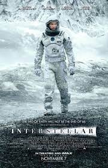

Cinema per tutti
Benvenuto nel nostro sito di cinema.
Qui troverete nostre opinioni su filme e nuove uscite,
il sito è stato appena creato quindi non presenta ancora molti contenuti.
Maggiore dettagli nella nostra guida completa
I nostri primi film
Restano un ricordo indelebile.
- L'era glaciale 3
- Inception
- The Great Gatsby

- Interstellar 
Fonti
Qui sotto i link Wikipiedia dei 4 film citati sopra:
Primo | Secondo | Terzo | Quarto |
Responsabili pagine:
simonetti.1854835@studenti.uniroma1.it
&
cuconasu.1835605@studenti.uniroma1.it